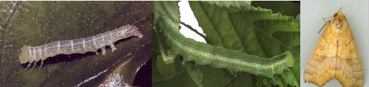
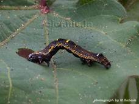

| Home |
| COTTON |
| 1. Leafhopper |
| 2. Cotton Aphid |
| 3. Thrips |
| 4. Whitefly |
| 5. Mealy Bug |
| 6. Red Cotton Bug |
| 7. Dusky Cotton Bug |
| 8. Tobacco Cutworm |
| 9. Leaf Roller |
| 10. Semiloopers |
| 11. Stem Weevil |
| 12. Shoot Weevil |
| 13. Surface Weevil |
| 14. Black Scale |
| 15. White Scale |
| 16. Yellow Stem Scale |
| Questions |
| Download Notes |
PESTS OF COTTON :: Minor Pests :: Semiloopers
10. Semiloopers
Distribution and status: India, Africa, Asia & Australia.
Host range: Cotton, tomato, bhendi and other malvaceous plants.
|
Late instar |
|
 |
||
Anomis flava |
||
Semiloopers |
Anomis flava |
Xanthodes graelsi |
Tarache nitidula Noctuidae |
Damage |
Defoliation |
Defoliation |
Defoliation |
Larva |
Green with five longitudinal white stripes and red prolegs |
Green with horseshoe markings and warts |
Dark brown |
Pupa |
Leaf folds |
In soil among the dry leaves |
In leaf |
Adult |
Reddish brown wings with markings |
Bright lemon yellow forewing with |
Bright white wings with dark markings |
 |
Tarache nitudula |